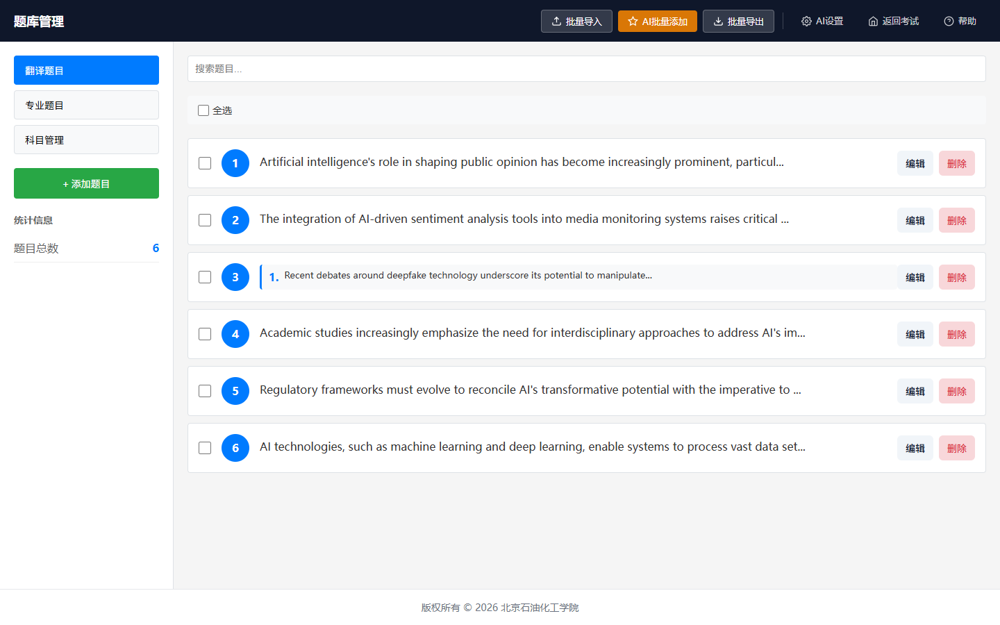

数据库题库编辑器使用指南
研究生复试流程控制系统 · Database Editor Guide
功能介绍
数据库题库编辑器是考试系统的核心组件，专门用于管理考试题目和题库内容。支持翻译题和专业题的分类管理，提供完整的增删改查功能。
- 题目分类管理：翻译题、专业题分别管理，支持科目分类
- 多媒体内容：支持文本和图片混合内容，灵活组合
- 智能搜索：支持题目内容搜索和科目筛选
- 批量操作：支持批量导入题目，提高效率
- 分页浏览：每页显示10道题目，支持翻页浏览
- 实时保存：编辑后自动保存到数据库
界面说明

图 1：数据库编辑器主界面
界面布局
- 顶部导航：系统标题和返回链接
- 左侧边栏：题目类型切换、搜索框、题目列表
- 右侧编辑区：题目详细编辑界面
- 底部工具栏：添加、导入、刷新等操作按钮
- 状态栏：显示题目统计和版本信息
题目类型
| 类型 | 说明 | 用途 |
|---|---|---|
| 翻译题 | 英文翻译题目 | 考试步骤 3 使用 |
| 专业题 | 专业课相关题目 | 考试步骤 4 使用 |
| 科目管理 | 专业题科目分类 | 管理专业题分类 |
翻译题管理
翻译题特点：翻译题主要用于英文翻译环节，通常包含英文段落和相关图片。题目内容可以是纯文本、纯图片或文本图片混合形式。
添加翻译题步骤
- 点击"翻译题"标签切换到翻译题管理
- 点击"添加题目"按钮
- 系统自动分配题目编号（从当前最大编号+1开始）
- 设置难度级别：简单、中等、困难
- 添加题目内容（文本和/或图片）
- 点击"保存"完成添加
提示：翻译题不需要设置科目，系统会自动归类为翻译题类型。
专业题管理
专业题特点：专业题按科目分类管理，每道题目必须指定所属科目。考试时会先让考生选择科目，然后从该科目中随机抽取题目。
科目筛选
在专业题管理界面，左侧会显示科目筛选下拉框，包含：
- 全部科目：显示所有专业题
- 具体科目：只显示该科目的题目
添加专业题步骤
- 点击"专业题"标签
- 点击"添加题目"按钮
- 设置题目编号和难度级别
- 重要：必须选择科目分类
- 添加题目内容
- 保存题目
注意：专业题必须指定科目，否则无法保存。如果需要的科目不存在，请先到科目管理中添加。
科目分类
科目管理功能
- 添加科目：为专业题创建新的科目分类
- 编辑科目：修改科目名称和描述
- 删除科目：删除不需要的科目（需确保该科目下无题目）
- 科目统计：查看每个科目下的题目数量
当前系统科目：人工智能导论、会计学、化学、市场营销、数据库系统、数据结构、计算机科学等。
批量导入导出
批量导入功能
支持批量导入题目，可以快速添加大量题目到题库中。
导入步骤
- 点击"批量导入"按钮
- 选择要导入的题目类型（翻译题或专业题）
- 按照系统提供的格式准备数据
- 上传数据文件或粘贴文本内容
- 系统自动分配题目编号并保存
编号规则：批量导入时，系统会自动从当前最大题目编号+1开始分配新编号，确保编号不重复。
注意事项
数据删除：删除题目时，相关图片文件需要手动清理，系统不会自动删除关联的图片资源。
图片管理
- 图片文件建议大小控制在 2MB 以内
- 推荐使用 JPG 格式，平衡质量和文件大小
- 图片会自动存储到 assets/uploads 目录
- 删除题目时，相关图片文件需要手动清理
题目编号
- 系统自动管理题目编号，无需手动设置
- 删除题目后，编号不会自动回收，保持历史一致性
- 新增题目总是从最大编号+1开始